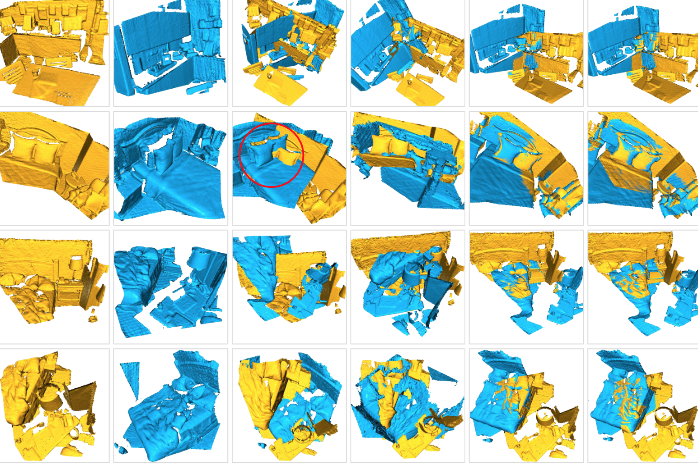
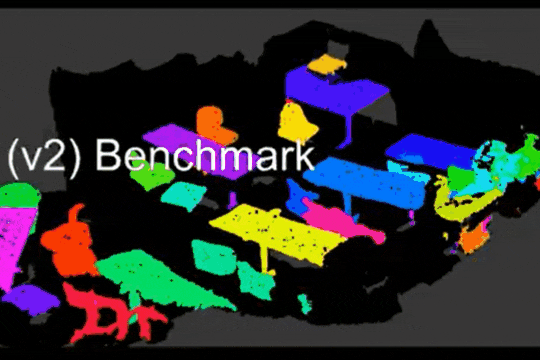
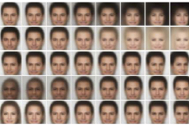

|
We introduce a simple implicit neural function to represent complex 3D geometries purely from 2D images. |
 |
The journal version of our RandLA-Net. More experiments and analysis are included. |
 |
We introduce a simple weakly-supervised neural network to learn precise 3D semantics for large-scale point clouds. |
|  |
We introduce a simple and general neural network to register pieces of 3D point clouds. |
 |
We introduce an urban-scale photogrammetric point cloud dataset and extensively evaluate and analyze the state-of-the-art algorithms on the dataset. |
 |
We introduce a simple end-to-end neural network with self-attention to estimate global poses from FMCW radar scans. |
 |
We present a learning-based LiDAR relocalization framework to efficiently estimate 6-DoF poses from LiDAR point clouds. |
 |
We introduce an efficient and lightweight neural architecture to directly infer per-point semantics for large-scale point clouds. |
|  |
We propose a simple and efficient neural architecture for accurate 3D instance segmentation on point clouds. It achieves the SOTA performance on ScanNet and S3DIS (June 2019). |
 |
We propose a novel end-to-end deep parallel neural network to estimate the 6-DOF poses using consecutive 3D point clouds. |
 |
We propose an attentive aggregation module together with a training algorithm for multi-view 3D object reconstruction. It outperforms all existing poolings and recurrent neural networks. |
|  |
We propose a simple embedding learning method that jointly optimises for an auto-encoding reconstruction task and for estimating the corresponding attribute labels. |